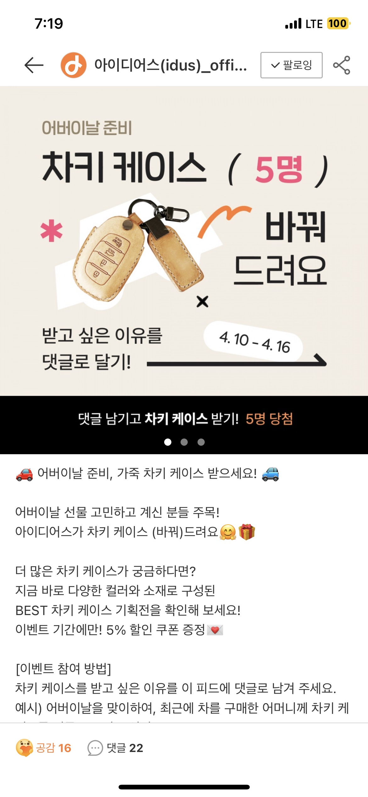
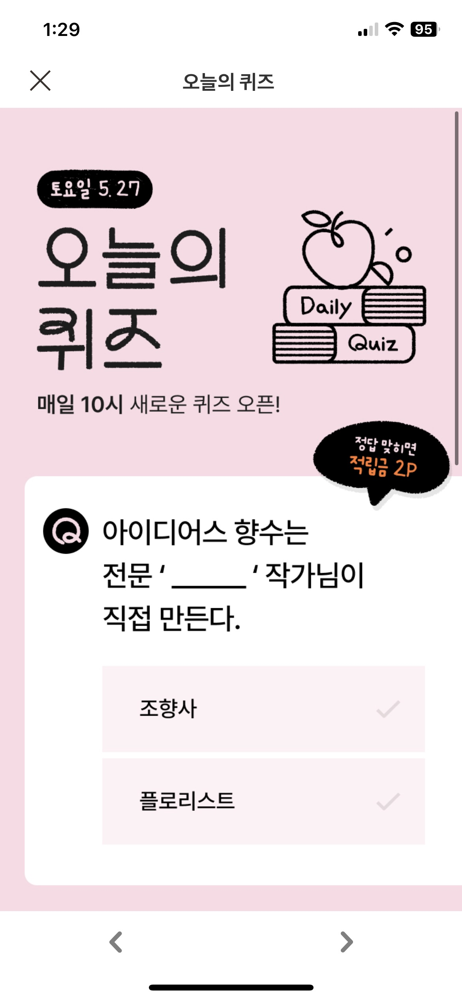
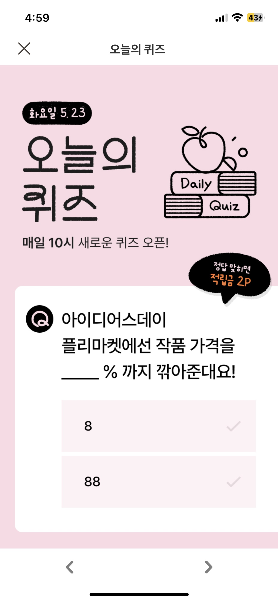
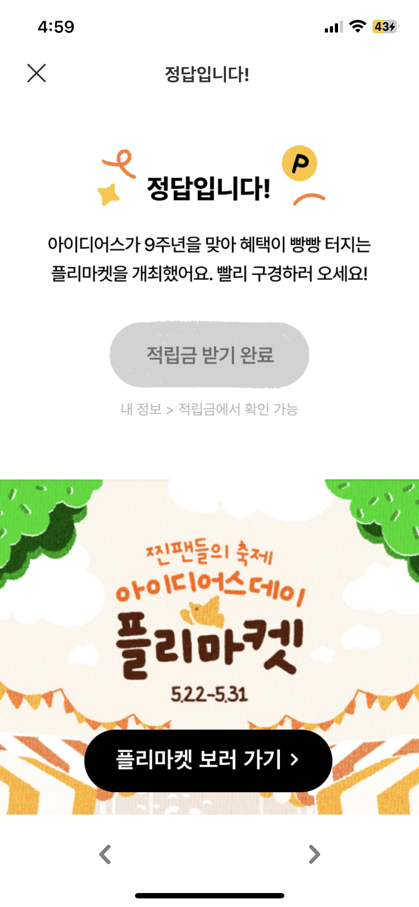

IDUS · 오늘의 퀴즈
기존 상시 이벤트의 참여 성과와 VOC를 살펴보며 댓글 작성 부담을 발견했고, 개발 리소스 없이 클릭형 퀴즈 포맷을 직접 제안·기획했습니다. 이후 이벤트 오너를 맡아 운영하며 반복 참여가 가능한 상시 콘텐츠로 확장했습니다.
Background
당시 아이디어스의 상시 이벤트는 모두 댓글 작성형으로 운영되고 있었습니다.
입사 이후 여러 상시 이벤트를 운영하며 성과를 확인해보니, 일부 이벤트는 기대만큼 참여가 이어지지 않았습니다.
이에 다른 서비스의 참여형 이벤트도 함께 살펴보며 고객이 더 쉽게 반복 참여할 수 있는 구조를 고민했습니다.
이 과정에서 VOC와 사용자 의견을 통해 댓글 작성이 생각보다 높은 참여 부담이 될 수 있다는 점을 확인했습니다.
Insight
이벤트의 목적이 참여와 상품 탐색에 가까운 경우에는 이 과정이 참여 장벽으로 작용할 수 있다고 판단했습니다.
Solution
고객이 별도의 문장을 작성하지 않아도 선택지를 클릭하면 참여할 수 있도록 퀴즈형 포맷을 기획했습니다.
실제 아이디어스의 기획전과 판매자 상품을 퀴즈 소재에 연결해,
고객이 재미있게 참여하면서 자연스럽게 상품과 기획전을 발견할 수 있도록 구성했습니다.


Constraint & Execution
오늘의 퀴즈는 별도의 개발 리소스를 사용하지 않는 non-feature 이벤트였습니다. 기존 운영 툴인 Hanoi 안에서 퀴즈 페이지, 정답 페이지, 리워드 수령, 상품 및 기획전 연결이 자연스럽게 이어지도록 이벤트 플로우를 설계했습니다.


Operation
매일 새로운 퀴즈를 구성하고, 정답 페이지에서 어떤 상품과 기획전을 보여줄지 직접 기획했습니다.
데이터 분석가가 제공한 쿼리를 활용해 주요 성과를 확인했고,
실제 참여 흐름과 클릭 성과를 보며 퀴즈 난이도, 소재, 상품 연결 방식, 카피를 계속 조정했습니다.
퇴사일까지 이벤트 오너를 맡아 운영했습니다.
Result
일회성 이벤트로 기획했던 포맷이 반복 운영 가능한 상시 콘텐츠로 확장되어, 퇴사일까지 이벤트 오너로서 지속 운영했습니다.